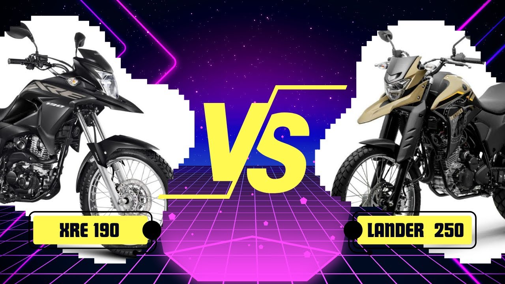

Honda XRE 190 vs Yamaha Lander 250: qual é melhor?

Comparação entre Honda XRE 190 e Yamaha Lander 250
A comparação Honda XRE 190 vs Yamaha Lander 250 é bastante comum entre motociclistas que procuram uma moto versátil para o dia a dia e também para pequenas viagens. Ambos os modelos pertencem à categoria trail, conhecida pela capacidade de rodar tanto no asfalto quanto em estradas de terra.
Apesar de terem propostas semelhantes, essas motos possuem diferenças importantes em relação a potência, consumo de combustível e preço. Por isso, entender essas diferenças é essencial antes de escolher qual modelo comprar.
Motor e desempenho
A Honda XRE 190 possui um motor de aproximadamente 184 cilindradas, com potência suficiente para o uso urbano e pequenas viagens. Ela oferece uma pilotagem confortável e é bastante confiável.
Já a Yamaha Lander 250 possui um motor maior, com cerca de 249 cilindradas. Isso significa mais potência e melhor desempenho em estrada. Para quem pretende viajar com frequência, essa diferença pode ser bastante relevante.
Em termos de aceleração e velocidade final, a Lander 250 costuma levar vantagem por causa do motor mais potente.
Consumo de combustível
Quando o assunto é economia, a Honda XRE 190 costuma apresentar números interessantes. O consumo médio pode ficar entre 35 km/l e 40 km/l, dependendo da forma de pilotagem.
A Yamaha Lander 250 também apresenta bom consumo, mas por ter um motor maior, os números costumam ficar um pouco abaixo. Muitos motociclistas relatam médias entre 30 km/l e 35 km/l.
Ou seja, quem prioriza economia pode encontrar uma pequena vantagem na XRE 190.
Conforto e uso em estrada
As duas motos possuem posição de pilotagem elevada e suspensões adequadas para enfrentar terrenos irregulares. Isso torna ambas boas opções para quem roda em estradas de terra ou enfrenta ruas com buracos.
Entretanto, a Lander 250 costuma oferecer mais estabilidade em velocidades maiores, principalmente em viagens de estrada. Isso acontece por causa do motor mais forte e da estrutura da moto.
Para trajetos urbanos e uso diário, as duas motos funcionam muito bem e oferecem boa ergonomia para o piloto.
Conclusão: qual moto vale mais a pena?
A escolha entre Honda XRE 190 vs Yamaha Lander 250 depende principalmente do tipo de uso que o motociclista pretende fazer.
A XRE 190 é uma excelente opção para quem busca economia de combustível e uma moto confiável para o dia a dia. Já a Lander 250 é mais indicada para quem quer mais potência e pretende rodar com frequência em estrada.
Ambos os modelos são muito populares no Brasil e oferecem bom custo-benefício dentro da categoria trail.
Outras notícias
Bajaj Dominar 400 vale a pena?
Qual moto escolher: Yamaha Fazer 250 ou Honda CB 300F Twister?